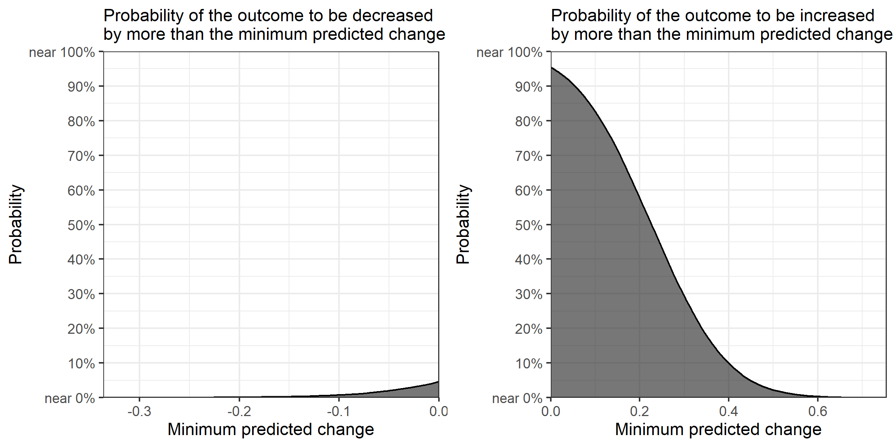

Top page | Research Projects | Publications and Working Papers | Statistical Programs | Data Science Blog
The R package "ccdfpost" allows you to plot a complementary cumulative distribution function for the posterior samples of a causal effect. In this vignette, I explain how to install the package and how to use it. For a theoretical rationale for using the plot, please refer to Suzuki (2022).
First, let's install the package. To do so, you need to have the devtools package (Wickham, Hester, and Chang 2020) installed.
# Install the devtools package to install a package from GitHub
install.packages("devtools")
# Install the ccdfpost package from GitHub
devtools::install_github("AkisatoSuzuki/ccdfpost")
Now, let's generate some hypothetical data via simulation, to be used to produce posterior samples via Bayesian regression. I choose arbitrary values for all parameters.
n <- 1000 set.seed(1) b1 <- rnorm(1, 2, 1) set.seed(2) x <- rnorm(n, b1, 10) set.seed(3) b2 <- rnorm(1, -1, 0.5) set.seed(4) z <- rnorm(n, b2, 10) set.seed(5) b3 <- rnorm(1, 1, 1) set.seed(6) b4 <- rnorm(1, 4, 1) set.seed(7) y <- rnorm(n, b3*x + b4*z, 10)
Now, let's estimate the effect of x on y using Bayesian linear regression. I do so via the rstanarm package (Goodrich et al. 2020), which works in a very similar way to the standard glm function. You can find more details on rstanarm at https://mc-stan.org/rstanarm. For simplicity, I leave the default priors used here.
# install.packages("rstanarm")
library(rstanarm)
d <- data.frame(y, x, z)
m <- stan_glm(y ~ x, data = d, family = gaussian(link = "identity"),
iter = 10000, warmup = 1000, cores = 4, chains = 4, seed = 8)
# Summarize the results
summary(m)
# Extract posterior samples as a data frame
post <- as.data.frame(m)
# A vector of posterior samples for the effect of x on y
post_x <- post$x
Once you have a vector of posterior samples, you can use the ccdfpost function as follows.
library(ccdfpost)
if (min(post_x) >= 0 | max(post_x) <= 0){
plot <- ccdfpost(post_x)
ggplot2::ggsave("ccdfpostex.png", plot=plot, height=4, width=4)
}
if (min(post_x) < 0 & max(post_x) > 0){
plotList <- ccdfpost(post_x)
plot <- gridExtra::grid.arrange(grobs = plotList, nrow = 1)
ggplot2::ggsave("ccdfpostex.png", plot=plot, height=4, width=8)
}
If the posterior samples contain only positive or negative values, the function returns one ggplot object. If the posterior samples contain both positive and negative values, it returns the list that contains two ggplot objects, one for the positive values and the other for the negative values. To combine these two objects, I suggest you use the grid.arrange function from the gridExtra package (Auguie 2017) and save the figure with the ggsave function while specifying "height = 4" and "width = 8" (as done in the above), so that all letters are fit within the saved image file. The example here produces the plot below.

Because the output is a ggplot object, the plot can be modified in the same way as usual ggplot objects. For example, let's change the theme.
# Modify the plot
plot1 <- plotList[[1]]
plot2 <- plotList[[2]]
plot1mod <- plot1 + ggplot2::theme_grey() +
ggplot2::theme(plot.title=ggplot2::element_text(size = 11))
plot2mod <- plot2 + ggplot2::theme_grey() +
ggplot2::theme(plot.title=ggplot2::element_text(size = 11))
plotmod <- gridExtra::grid.arrange(plot1mod, plot2mod, nrow = 1)
ggplot2::ggsave("ccdfpostex2.png", plot=plotmod, height=4, width=8)
References
Auguie, Baptiste. 2017. "gridExtra: Miscellaneous Functions for 'Grid' Graphics." R package version 2.3. https://CRAN.R-project.org/package=gridExtra.
Goodrich, Ben, Jonah Gabry, Imad Ali, and Sam Brilleman. 2020. "Rstanarm: Bayesian Applied Regression Modeling via Stan." https://mc-stan.org/rstanarm.
Suzuki, Akisato. 2022. "Presenting the Probabilities of Different Effect Sizes: Towards a Better Understanding and Communication of Statistical Uncertainty." arXiv:2008.07478v3 [stat.AP].
Wickham, Hadley, Jim Hester, and Winston Chang. 2020. "devtools: Tools to Make Developing R Packages Easier." R package version 2.3.0. https://CRAN.R-project.org/package=devtools.